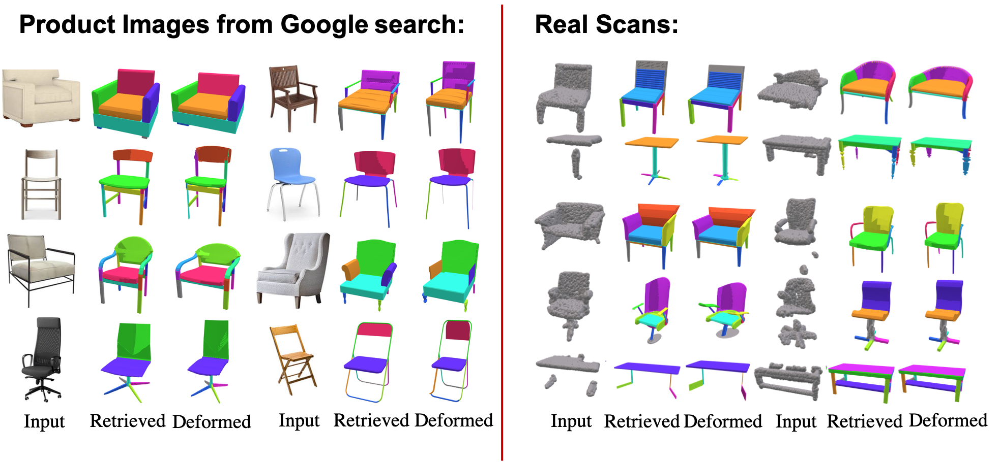

Conference on Computer Vision and Pattern Recognition (CVPR), 2021
Given an input target we use jointly-learned retrieval and deformation modules to find a source model in a heterogeneous database and align it to the target. We demonstrate that our joint learning outperforms static retrieval and non-joint baselines.
Abstract
We propose a novel technique for producing high-quality 3D models that match a given target object image or scan. Our method is based on retrieving an existing shape from a database of 3D models and then deforming its parts to match the target shape. Unlike previous approaches that in- dependently focus on either shape retrieval or deformation, we propose a joint learning procedure that simultaneously trains the neural deformation module along with the embed- ding space used by the retrieval module. This enables our network to learn a deformation-aware embedding space, so that retrieved models are more amenable to match the tar- get after an appropriate deformation. In fact, we use the embedding space to guide the shape pairs used to train the deformation module, so that it invests its capacity in learn- ing deformations between meaningful shape pairs. Further- more, our novel part-aware deformation module can work with inconsistent and diverse part-structures on the source shapes. We demonstrate the benefits of our joint training not only on our novel framework, but also on other state- of-the-art neural deformation modules proposed in recent years. Lastly, we also show that our jointly-trained method outperforms various non-joint baselines.
During training, given a target image or a point cloud and a database of deformable sources, we retrieve a subset of source models based on their proximity in the retrieval space, and use the structure-aware deformation module (right) to fit each source. Our deformation module uses encoded target, global and per-part source codes to predict per-part deformation parameters.
Image-to-Mesh
Visualization of qualitative results on the image-to-mesh setup. Our network achieves the best results as shown by the thickness of legs of the chair, the shape of the back and the shape of the legs of the table.
Point Cloud-to-Mesh
Visualization of qualitative results on the point cloud-to-mesh setup. Our network also achieves the best results as shown by the height of the chair seat, the base of the table, and the cabinet without shelves.
Joint Training on Neural Cages
We also show that the advantages of joint training is not specific to our novel deformation function, but also improves other state-of-the-art deformation modules such as neural cages. Observe that the retrieved models of our joint approaches better match the geometry of the input chair and sofa. Moreover, our structure-aware deformation function is able to match the local part geometries such as the thickness of the sofa.
Automatic Segmentation
As manual fine-grain part annotating is a tedious task, large databases of such models are scarce. We also show that our approach works on automatically segmented models such as those found in ComplementMe, enabling the use of our method on a wider array of source databases.
Applications

Applications of our pipeline on fitting to product images from Google search and to real world scans.
Citation
@inproceedings{uy-joint-cvpr21,
title = {Joint Learning of 3D Shape Retrieval and Deformation},
author = {Mikaela Angelina Uy and Vladimir G. Kim and Minhyuk Sung and Noam Aigerman and Siddhartha Chaudhuri and Leonidas Guibas},
booktitle = {IEEE Conference on Computer Vision and Pattern Recognition (CVPR)},
year = {2021}
}
Acknowledgements
This work is supported by a grant from the Samsung GRO program, a Vannevar Bush Faculty Fellowship, and gifts from Adobe, Autodesk, and Snap.